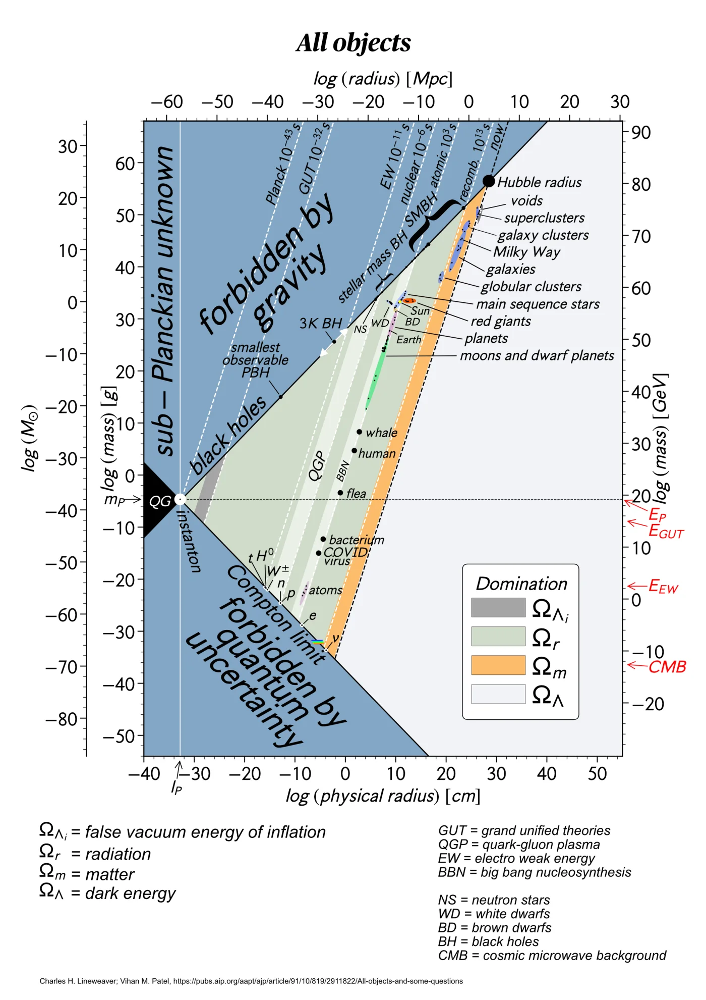

The Triangle of Everything
Plot anything in the universe by its size and its mass, and it lands inside one triangle. I ran across that chart on Reddit, couldn't stop looking at it, and rebuilt it as something you can play, from the instant the universe began to today.
Found on Reddit
I ran across the Triangle of Everything on Reddit. It is one chart with everything on it: quarks, atoms, viruses, people, planets, stars, black holes, galaxies and the observable universe, each placed by how wide it is and how much it weighs, on scales that run from the smallest length physics knows to the edge of everything we can see.

I was fascinated. Nothing we know of falls outside the triangle, and that isn't an accident of who drew it. Each edge is a law of physics.
Three walls
Both axes are logarithmic, so each step along them is a factor of ten. On those axes, three lines fence everything in.
- Schwarzschild radiusSqueeze any mass inside this size and it becomes a black hole. Nothing can be denser, so nothing sits above the line, and every black hole sits right on it.
- Compton limitQuantum uncertainty smears a particle over a size set by its mass, and nothing can be pinned down any smaller. Fundamental particles sit on this line.
- Hubble radiusThe distance beyond which space recedes from us faster than light. Fill a sphere that wide at the universe's average density and it is exactly as dense as a black hole of the same size, which is why this wall meets the black-hole line at the top corner.
The two slanted walls meet at the Planck scale, the smallest size and the highest density physics can describe. That corner is the Big Bang.
Could it play?
The longer I looked, the more I wondered whether it could be more than a picture. The right-hand wall isn't fixed. The Hubble radius measures the universe at one moment, and it has been growing since the beginning. Wind the clock back and that wall slides down the black-hole line toward the corner, until all three walls meet at a single point.
So the chart isn't only a map of everything. It's one frame of a triangle that has been opening for 13.8 billion years. I wanted to watch it open: to press play at the Big Bang and see each kind of thing appear when it first existed.
Rebuilding it from the data
A chart you can play needs data, not pixels. Working with Claude Code, I transcribed the chart, and an illustrated poster version of it, into datasets: 53 objects, the 17 entries of its stellar-evolution inset, 19 particles, the timeline of cosmic eras, and 33 points from Lineweaver and Patel's chart.
Then I stopped trusting the artwork. Every wall, density line and time line is drawn from its equation with exact constants. Black holes are placed from their mass by the Schwarzschild formula and particles by their Compton wavelength, so a dot that belongs on a wall stays on it even zoomed in 150 times. Checking everything that way turned up 14 places where the poster contradicts itself or physics, from a mislabelled mass axis to a legend that swaps leptons and hadrons. They're listed beside the chart.
The motion comes from cosmology. Using the Planck 2018 model of the expanding universe, I worked out 701 moments from the instant the walls meet to today: how dense the universe was, how wide its Hubble sphere and observable universe were, and how hot it was. Every object carries the date it first existed, and at each moment the chart draws only what existed then and fit inside the universe of the time.
Later I added all 118 elements as dots on the triangle, with masses and sizes from PubChem and the cosmic source of each one's atoms: the Big Bang for hydrogen and helium, exploding stars for oxygen and iron, merging neutron stars for gold, and laboratories for the last two dozen. Then 24 molecules filled the gap between the atoms and the viruses, from helium hydride, the first molecule in the universe, to the two metres of DNA in every human cell.
Playing the universe
Press play and 13.8 billion years pass in 48 seconds. The time bar runs on a scale that gives the first trillionth of a second as much room as the last few thousand years.
- It starts with the three walls meeting at a point, half a Planck time after the Big Bang.
- Light appears at a trillionth of a second, atoms at 380,000 years, the first stars at about 100 million years, and the newest elements in the last 82 years.
- A glowing marker follows the peak of the universe's background light as it cools from gamma rays to the microwaves we see today.
- Nothing is drawn beyond the Hubble wall of the moment, so the chart only ever shows a universe that could exist then.
- A Shepard tone rises underneath without end. Each new arrival gets a ring that closes in on it and a pop pitched by its mass: particles ring high and galaxies low.
From the triangle you can open views of stellar evolution, the particle zoo and the timeline.
Sources
- Charles H. Lineweaver and Vihan M. Patel, All objects and some questions, American Journal of Physics 91, 819 (2023).
- Planck Collaboration, Planck 2018 results. VI. Cosmological parameters, Astronomy & Astrophysics 641, A6 (2020): the expansion history.
- PubChem periodic table: element masses and van der Waals radii.
- Jennifer A. Johnson, Populating the periodic table: Nucleosynthesis of the elements, Science 363, 474 (2019): where each element is made.
- Particle Data Group: particle masses.
- David M. Jacobs, Glenn D. Starkman and Bryan W. Lynn, Macro dark matter, Monthly Notices of the Royal Astronomical Society 450, 3418 (2015): the dark-matter windows.